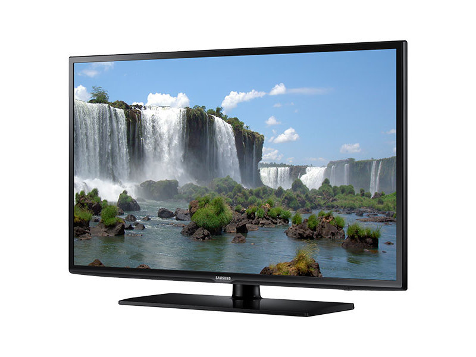

I like very much to watch TV in my free time. Watching TV is my hobby however it never interfere with my study. First I prefer to complete my university home works and study well then I watch TV. I think I have a good hobby because watching TV provides me good knowledge in many areas. I generally see news and discovery channels including animal planet on the TV. I also watch good sport channels which give me new and creative ideas to make stronger and persistence. My parents appreciate my hobby and they become very happy when they listen all the latest news through me in my voice.

My favorite hobby is playing football in spare time. After completing my home work at home, I generally encourage my valuable time with my friends in order to playing football .I was so interested to play football from my childhood however started learning to play well when I was 12 years old. I was in six class when I was 12 years old. My father asked to my class teacher in the PTM about my hobby of football. And my teacher told him that there is a facility of playing sports daily in the school from class 8 so you can admit your child. Now, I really enjoy playing football and participate in some competitions
I really interesting in reading especially knowledgeable books in my free time. Whenever I go to home from my University I prefer to read such books after completing my home work. old and read. Now I know very well that reading is very good habit which can make me a complete. This hobby can be developed by anyone however I got this naturally. Reading books keep one always happy and busy. It is the good source of enjoyment, knowledge, inspiration and instruction. It makes us disciplined, loyal, punctual and most importantly a successful person in the life.